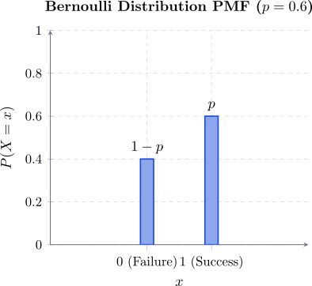
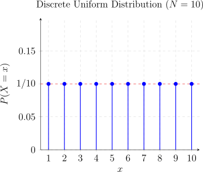
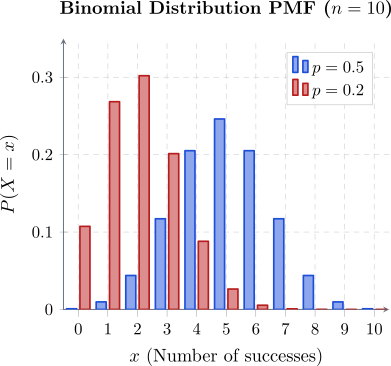
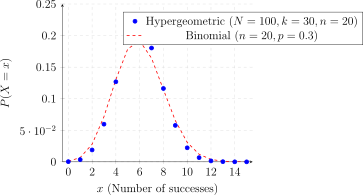
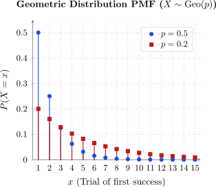
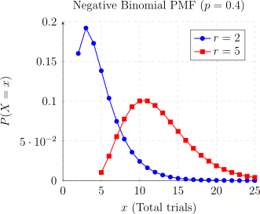
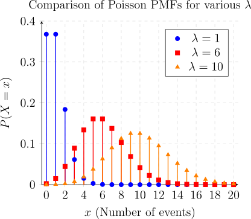
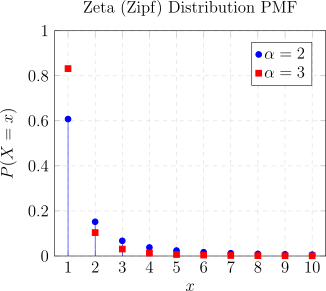

2.5 Some Important Discrete Probability Mass Function
We focus on specific families of discrete random variables that appear frequently in scientific research, engineering, and economics. Each distribution is defined by one or more parameters that determine its shape and characteristics. By identifying a situation as fitting one of these models, we can use pre-derived formulas for their mean, variance, and generating functions.
2.5.1 The Bernoulli Distribution
The Bernoulli trial is the simplest form of a random experiment, characterized by exactly two possible outcomes: “success” and “failure.” By convention, we map the outcome “success” to the value \(1\) and “failure” to the value \(0\). Let \(p\) denote the probability of success, where \(0 \le p \le 1\). It follows that the probability of failure is \(1-p\), often denoted as \(q\).
Definition 2.5.1. A random variable \(X\) is said to follow a Bernoulli distribution, denoted \(X \sim \operatorname {Ber}(p)\), if its probability mass function (PMF) is: \[ f(x; p) = p^x(1-p)^{1-x}, \quad x \in {0, 1} \] where \(p = P(X=1)\).

Example 2.5.2. Consider the experiment of rolling a fair six-sided die. What is the probability of obtaining a score of at least 5?
Solution. The sample space is \(S = \{1, 2, 3, 4, 5, 6\}\). We can define a Bernoulli trial by partitioning this set into:
- Success (\(X=1\)): The outcome is in the set \(\{5, 6\}\).
- Failure (\(X=0\)): The outcome is in the set \(\{1, 2, 3, 4\}\).
Since the die is fair, the probability of success is: \[ p = P(X=1) = \frac {2}{6} = \frac {1}{3} \] Thus, the probability of rolling a score of at least 5 is \(1/3\).
Theorem 2.5.3. If \(X \sim \operatorname {Ber}(p)\), then:
-
Mean: \(E(X) = p\).
Proof. By the definition of expectation: \[ E(X) = \sum _{x=0}^{1} x \cdot f(x; p) = (0)(1-p) + (1)(p) = p. \] □
-
Variance: \(\operatorname {Var}(X) = p(1-p)\).
Proof. First, we calculate the second raw moment: \[ E(X^2) = \sum _{x=0}^{1} x^2 \cdot f(x; p) = (0^2)(1-p) + (1^2)(p) = p. \] Using the identity \(\operatorname {Var}(X) = E(X^2) - [E(X)]^2\): \[ \operatorname {Var}(X) = p - p^2 = p(1-p). \] □
Theorem 2.5.4. The generating functions for \(X \sim \operatorname {Ber}(p)\) are given by:
- Probability Generating Function (PGF): \[ G_X(t) = E[t^X] = t^0(1-p) + t^1(p) = (1-p) + pt. \]
- Moment Generating Function (MGF): \[ M_X(t) = E[e^{tX}] = e^{0}(1-p) + e^{t}(p) = (1-p) + pe^t, \quad t \in \mathbb {R}. \]
- Characteristic Function: \[ \phi _X(t) = E[e^{itX}] = (1-p) + pe^{it}, \quad t \in \mathbb {R}. \]
2.5.2 Discrete Uniform
The Discrete Uniform distribution describes a situation where a finite number of outcomes are all equally likely to occur. A classic example is the roll of a fair \(N\)-sided die, where each face has an identical probability of appearing.
Definition 2.5.5. A random variable \(X\) is said to follow a Discrete Uniform distribution on the set \(\{1, 2, \dots , N\}\) if its probability mass function (PMF) is given by: \[ f_X(x) = P(X=x) = \frac {1}{N}, \quad x = 1, 2, 3, \dots , N \]

Remark 2.5.6. To derive the mean and variance, we utilize the standard power sum formulas: \[\sum _{i=1}^N i = \frac {N(N+1)}{2}\quad \text {and} \quad \sum _{i=1}^N i^2 = \frac {N(N+1)(2N+1)}{6}.\]
Theorem 2.5.7. Moments of the distribution
- Mean (Expectation): \begin {align*} E(X) &= \sum _{x=1}^N x \cdot P(X=x)\\ &= \sum _{x=1}^N x \cdot \frac {1}{N} \\ &= \frac {1}{N} \sum _{x=1}^N x\\ & = \frac {1}{N} \left [ \frac {N(N+1)}{2} \right ]\\ &= \frac {N+1}{2}. \end {align*}
-
Variance: First, we calculate the second raw moment \(E(X^2)\): \begin {align*} E(X^2) &= \sum _{x=1}^N x^2 \cdot \frac {1}{N}\\ & = \frac {1}{N} \left [ \frac {N(N+1)(2N+1)}{6} \right ] \\ &= \frac {(N+1)(2N+1)}{6}. \end {align*}
Using the identity \(\operatorname {Var}(X) = E(X^2) - [E(X)]^2\): \begin {align*} \operatorname {Var}(X) &= \frac {(N+1)(2N+1)}{6} - \left ( \frac {N+1}{2} \right )^2 \\ &= \frac {N+1}{2} \left [ \frac {2N+1}{3} - \frac {N+1}{2} \right ] \\ &= \frac {N+1}{2} \left [ \frac {4N+2 - 3N - 3}{6} \right ] \\ &= \frac {(N+1)(N-1)}{12}\\ & = \frac {N^2-1}{12}. \end {align*}
Theorem 2.5.8. The transform functions for the Discrete Uniform distribution are based on the sum of a geometric progression.
- Probability Generating Function (PGF): For \(t \neq 1\): \[ G_X(t) = E[t^X] = \sum _{x=1}^N t^x \frac {1}{N} = \frac {t(1-t^N)}{N(1-t)}. \]
- Moment Generating Function (MGF): For \(t \neq 0\): \[ M_X(t) = E[e^{tX}] = \sum _{x=1}^N e^{tx} \frac {1}{N} = \frac {e^t(1-e^{Nt})}{N(1-e^t)}. \]
- Characteristic Function: \[ \phi _X(t) = E[e^{itX}] = \frac {e^{it}(1-e^{iNt})}{N(1-e^{it})}. \]
Remark 2.5.9. To derive the mean \(E(X)\) using the PGF, it is mathematically more convenient to differentiate the series expansion \(\sum \frac {1}{N}t^x\) rather than the closed-form quotient. If the quotient form is used, one must apply L’Hôpital’s Rule twice (for the second derivative) to resolve the indeterminate forms at \(t=1\).
Proof.
- Instead of using the “shortcut” formula, it is often easier to differentiate the summation form directly. This avoids the denominator issue entirely: \[ G_X'(t) = \frac {d}{dt} \left [ \sum _{x=1}^N \frac {1}{N}t^x \right ] = \sum _{x=1}^N \frac {x}{N}t^{x-1} \] When we evaluate at \(t=1\): \[ E(X) = G_X'(1) = \sum _{x=1}^N \frac {x}{N}(1)^{x-1} = \frac {1}{N} \sum _{x=1}^N x = \frac {N+1}{2} \]
- The L’Hôpital’s Rule Method (Using the Closed Form)If you insist on using the closed-form \(G_X(t) = \frac {t(1-t^N)}{N(1-t)}\), you must use limits.
2.5.3 The Binomial Distribution
The Binomial distribution models the number of successes in a sequence of \(n\) independent trials, each with the same probability of success \(p\). It is essentially the sum of \(n\) independent and identically distributed (i.i.d.) Bernoulli random variables.
Definition 2.5.10. A random variable \(X\) follows a Binomial distribution, denoted \(X \sim \operatorname {Bin}(n, p)\), if its probability mass function (PMF) is: \[ f(x; n, p) = P(X=x) = \binom {n}{x} p^x (1-p)^{n-x}, \quad x = 0, 1, 2, \dots , n \] where \(n\) is the number of trials and \(p\) is the probability of success.
Remark 2.5.11. If \(X_1, X_2, \dots , X_n\) are i.i.d. Bernoulli random variables with parameter \(p\), then the random variable \(X = \sum _{i=1}^n X_i\) follows a Binomial distribution with parameters \(n\) and \(p\).

Example 2.5.12. A textile firm finds that only \(20\%\) of applicants are qualified. If 5 people are interviewed, find the probability that at least two are qualified.
Solution. Here \(n=5\) and \(p=0.2\) (so \(q=0.8\)). We want \(P(X \ge 2)\): \begin {align*} P(X \ge 2) &= 1 - P(X < 2)\\ & = 1 - [P(X=0) + P(X=1)]\\ &= 1 - \left [ \binom {5}{0}(0.2)^0(0.8)^5 + \binom {5}{1}(0.2)^1(0.8)^4 \right ]\\ &= 1 - [0.32768 + 0.4096]\\ & = 0.26272. \end {align*}
Remark 2.5.13. Some identities
- \(x^{(k)}\binom {n}{x} = n^{(k)}\binom {n-k}{x-k}\)
- \(x^{(k)} = x(x - 1)(x - 2) \cdots (x - k + 1)\)
- \(\binom {x + k - 1}{x} = \binom {x + k - 1}{k - 1} = (-1)^x\binom {-k}{x}\)
Theorem 2.5.14. If \(X \sim \operatorname {Bin}(n, p)\), the mean and variance are given by:
-
\(E(X) = np\)
Proof. Mean \begin {align*} E(X) &= \sum _{x=0}^n x \binom {n}{x} p^x (1-p)^{n-x}\\ & = \sum _{x=1}^n \frac {x \cdot n!}{x!(n-x)!} p^x (1-p)^{n-x}\\ & = np \sum _{x=1}^n \frac {(n-1)!}{(x-1)!(n-x)!} p^{x-1} (1-p)^{n-x}\\ & = np \sum _{y=0}^{n-1} \binom {n-1}{y} p^y (1-p)^{n-1-y} \quad (\text {letting } y = x-1)\\ & = np(p + (1-p))^{n-1}\\ & = np(1)^{n-1}\\ & = np. \end {align*} □
-
\(\operatorname {Var}(X) = np(1-p)\)
Proof. To find \(\operatorname {Var}(X)\), we first find \(E[X(X-1)]\): \begin {align*} E[X(X-1)] &= \sum _{x=2}^n x(x-1) \binom {n}{x} p^x (1-p)^{n-x}\\ &= \sum _{x=2}^n x^{(2)} \binom {n}{x} p^x (1-p)^{n-x}\\ &= n(n-1)p^2 \sum _{x=2}^n \binom {n-2}{x-2} p^{x-2} (1-p)^{n-x}\\ & = n(n-1)p^2. \end {align*}
Since \(E(X^2) = E[X(X-1)] + E(X) = n(n-1)p^2 + np\): \begin {align*} \operatorname {Var}(X) &= n(n-1)p^2 + np - (np)^2\\ & = n^2p^2 - np^2 + np - n^2p^2\\ & = np(1-p). \end {align*} □
Theorem 2.5.15. The generating functions for \(X \sim \operatorname {Bin}(n, p)\) are:
- Probability Generating Function (PGF): \begin {align*} G_X(t) &= E[t^X]\\ & = \sum _{x=0}^n t^x \binom {n}{x} p^x (1-p)^{n-x}\\ &= \sum _{x=0}^n \binom {n}{x} (pt)^x (1-p)^{n-x}\\ & = (pt + 1 - p)^n. \end {align*}
- Moment Generating Function (MGF): \begin {align*} M_X(t) &= E\left [e^{tx}\right ]\\ & =\sum ^n_{x=0}e^{tx}P(X=x)\\ &=\sum ^n_{x=0}e^{tx}\binom {n}{x}p^x(1-p)^{n-x}\\ &=\sum ^n_{x=0}\binom {n}{x}\left [pe^t\right ]^x(1-p)^{n-x}\\ & = (pe^t+1-p)^n. \end {align*}
- Characteristic Function (CF): \[ \phi _X(t) = E[e^{itX}] = (pe^{it} + 1 - p)^n. \]
2.5.4 The Hypergeometric Distribution
Consider a population of \(N\) items, where \(k\) items possess a certain characteristic (successes) and \(N-k\) do not (failures). If a sample of \(n\) items is drawn at random without replacement, let \(X\) represent the number of successes in the sample.
Definition 2.5.16. A random variable \(X\) follows a Hypergeometric distribution, denoted \(X \sim \operatorname {Hyp}(N, n, k)\), if its probability mass function (PMF) is: \[ P(X=x) = \frac {\binom {k}{x}\binom {N-k}{n-x}}{\binom {N}{n}}, \quad x = \max (0, n-(N-k)), \dots , \min (n, k)\]

Example 2.5.17. A shipment contains 100 items, of which \(k\) are defective. A sample of size \(n=2\) is selected. The shipment is accepted only if both items are non-defective (\(X=0\)).
Solution. The PMF for \(N=100, n=2\) is \[P(X=x) = \frac {\binom {k}{x}\binom {100-k}{2-x}}{\binom {100}{2}}.\]
- If \(10\%\) are defective (\(k=10\)): \[ P(X=0) = \frac {\binom {10}{0}\binom {90}{2}}{\binom {100}{2}} = \frac {1 \cdot 4005}{4950} \approx 0.8091. \]
- If \(20\%\) are defective (\(k=20\)): \[ P(X=0) = \frac {\binom {20}{0}\binom {80}{2}}{\binom {100}{2}} = \frac {1 \cdot 3160}{4950} \approx 0.6384. \]
Remark 2.5.18. Vandermonde’s Identity and Useful Relations: \begin {equation} \sum _{x = 0}^n \binom {k}{x}\binom {N-k}{n-x} = \binom {N}{n}\quad (\text {Ensures}\quad \sum P(X=x) = 1) \end {equation} \begin {equation} x\binom {k}{x} = k\binom {k-1}{x - 1} \end {equation} \begin {equation} n\binom {N}{n} = N\binom {N-1}{n-1} \end {equation}
Lemma 2.5.19. If \(X \sim \operatorname {Hyp}(N, n, k)\), then: \begin {align*} E\left [X^r\right ] & = \sum ^n_{x = 0}x^rP(X = x)\\ & = \sum ^n_{x =1}\frac {x^r\, \binom {k}{x}\binom {N-k}{k-x}}{\binom {N}{n}}\\ & = n\sum ^n_{x = 1}\frac {x^{r-1}\, k\binom {k-1}{x - 1}\binom {N-k}{n-x}}{N\binom {N-1}{n-1}}\quad (\text {by equ 2.4 and 2.5})\\ & = \frac {nk}{N}\sum ^n_{x = 1}\frac {x^{r-1}\binom {k - 1}{x - 1}\binom {N - k}{n - x}}{\binom {N-1}{n-1}}\\ & = \frac {nk}{N}\sum ^{n-1}_{y =0}\frac {(y + 1)^{r-1}\,\binom {k-1}{y}\binom {N-k}{n-1 - y}}{\binom {N-1}{n-1}}\\ & = \frac {nk}{N}\, E\left [(Y + 1)^{r-1}\right ] \end {align*}
where \(Y \sim \operatorname {Hyp}(N-1, n-1, k-1)\)
Theorem 2.5.20. If \(X \sim \operatorname {Hyp}(N, n, k)\), then: \[ E(X) = \frac {nk}{N} \quad \text {and} \quad \operatorname {Var}(X) = \frac {nk}{N}\left (\frac {N-k}{N}\right )\left (\frac {N-n}{N-1}\right ) \]
Proof. Using the \(r\)-th moment relation derived: \(E[X^r] = \frac {nk}{N} E[(Y+1)^{r-1}]\), where \(Y \sim \operatorname {Hyp}(N-1, n-1, k-1)\).
- Mean (\(r=1\)): \[E[X] = \frac {nk}{N} E[1] = \frac {nk}{N}.\]
- Variance: First find \(E[X(X-1)]\). By similar logic to the mean: \[ E[X(X-1)] = \frac {nk}{N} \cdot \frac {(n-1)(k-1)}{N-1}. \] Then, \(\operatorname {Var}(X) = E[X(X-1)] + E(X) - [E(X)]^2\): \begin {align*} \operatorname {Var}(X) &= \frac {nk(n-1)(k-1)}{N(N-1)} + \frac {nk}{N} - \left (\frac {nk}{N}\right )^2\\ &= \frac {nk}{N} \left [ \frac {(n-1)(k-1)}{N-1} + 1 - \frac {nk}{N} \right ]\\ &= \frac {nk(N-k)(N-n)}{N^2(N-1)}. \end {align*}
Remark 2.5.21. The Finite Population Correction: The variance of the Hypergeometric distribution is the same as the Binomial variance (\(npq\), where \(q = \frac {N-k}{N}\)), multiplied by the factor \(\frac {N-n}{N-1}\). As \(N \to \infty \), this factor approaches \(1\), and the Hypergeometric converges to the Binomial.
Remark 2.5.22. The hypergeometric has no closed form of MGF. \[\sum ^{\min (n,k)}_{x=0}e^{tx}\frac {\binom {k}{x}\binom {N-k}{n-x}}{\binom {N}{n}}.\]
2.5.5 The Geometric Distribution
The Geometric distribution models the number of independent Bernoulli trials required to achieve the first success. Unlike the Binomial distribution, which has a fixed number of trials \(n\), the Geometric distribution has a fixed number of successes (one) and a variable number of trials.
Definition 2.5.23. A random variable \(X\) follows a Geometric distribution, denoted \(X \sim \operatorname {Geo}(p)\), if its probability mass function (PMF) is given by: \[ f(x; p) = P(X=x) = q^{x-1}p, \quad x = 1, 2, 3, \dots \] where \(p\) is the probability of success and \(q = 1-p\) is the probability of failure.

Useful Results: Geometric Series
To derive the moments of this distribution, we rely on the properties of the geometric series for \(|t| < 1\):
- \(\sum _{x = 0}^{\infty } t^x = \frac {1}{1-t}\)
- \(\sum _{x = 1}^{\infty } x t^{x-1} = \frac {d}{dt} \left ( \sum _{x = 0}^{\infty } t^x \right ) = \frac {1}{(1-t)^2}\)
- \(\sum _{x = 2}^{\infty } x(x-1) t^{x-2} = \frac {d^2}{dt^2} \left ( \sum _{x = 0}^{\infty } t^x \right ) = \frac {2}{(1-t)^3}\)
Proof. \begin {align*} \sum ^{\infty }_{x=1}P(X=x) &=\sum ^{\infty }_{x=1}p(1-p)^{x-1}\\ &=p\sum ^{\infty }_{x=1}(1-p)^{x-1}\\ &=p\sum ^{\infty }_{k=0}(1-p)^k\,\quad \quad (\text {letting}\quad k = x - 1)\\ &=p\, \frac {1}{1-(1-p)}=\frac {p}{p}\\ &=1 \end {align*} □
Theorem 2.5.25 (Moments of the Geometric Distribution). If \(X \sim \operatorname {Geo}(p)\), then:
- Mean: \[E(X) = \frac {1}{p}\]
- Variance: \[\operatorname {Var}(X) = \frac {1-p}{p^2}\]
Proof. 1. Mean: Using the second series result above: \[ E(X) = \sum _{x=1}^{\infty } x \cdot p q^{x-1} = p \sum _{x=1}^{\infty } x q^{x-1} = p \left ( \frac {1}{(1-q)^2} \right ) = p \left ( \frac {1}{p^2} \right ) = \frac {1}{p}. \] 2. Variance: First, we find the second factorial moment using the third series result: \begin {align*} E[X(X-1)] & = \sum _{x=1}^{\infty } x(x-1) p q^{x-1}\\ & = pq \sum _{x=2}^{\infty } x(x-1) q^{x-2}\\ & = pq \left ( \frac {2}{(1-q)^3} \right )\\ & = \frac {2pq}{p^3}\\ & = \frac {2q}{p^2}. \end {align*}
Using the identity \(\operatorname {Var}(X) = E[X(X-1)] + E(X) - [E(X)]^2\): \[ \operatorname {Var}(X) = \frac {2q}{p^2} + \frac {1}{p} - \frac {1}{p^2} = \frac {2q + p - 1}{p^2} = \frac {2(1-p) + p - 1}{p^2} = \frac {1-p}{p^2}. \] □
Theorem 2.5.26. Transform Functions:
- Probability Generating Function (PGF): \[ G_X(t) = E[t^X] = \sum _{x=1}^{\infty } t^x p q^{x-1} = pt \sum _{x=1}^{\infty } (qt)^{x-1} = \frac {pt}{1-qt}, \quad |t| < \frac {1}{q}. \]
- Moment Generating Function (MGF): \[ M_X(t) = E[e^{tX}] = \frac {pe^t}{1-qe^t}, \quad t < -\ln (q). \]
Theorem 2.5.27 (Memoryless Property). The Geometric distribution is the only discrete distribution with the memoryless property: \[ P(X > i+j \mid X > i) = P(X > j) \] This means that the probability of needing \(j\) more trials to get a success does not depend on how many failed trials (\(i\)) have already occurred.
Example 2.5.28. In a large production batch, \(5\%\) of items are defective. A quality control inspector tests items one by one until the first defective item is found.
- Find the probability that the first defective item is the \(10^{th}\) item tested.
- Find the expected number of items the inspector must test.
Solution. Let \(X\) be the number of items tested until the first defective. Here, \(p = 0.05\) and \(q = 0.95\).
- \(P(X=10) = q^{10-1}p = (0.95)^9(0.05) \approx 0.0315\).
- \(E(X) = \frac {1}{p} = \frac {1}{0.05} = 20\) items.
2.5.6 The Negative Binomial Distribution
The Negative Binomial distribution models the number of independent Bernoulli trials required to achieve a fixed number of successes, denoted by \(r\). It is often referred to as the Pascal distribution or the waiting time distribution.
Definition 2.5.29. A random variable \(X\) follows a Negative Binomial distribution, denoted \(X \sim \operatorname {NB}(r, p)\), if its probability mass function (PMF) is: \[ f_X(x) = \binom {x-1}{r-1} p^r (1-p)^{x-r}, \quad x = r, r+1, r+2, \dots \] where \(p\) is the probability of success in each trial.

The Two Versions of the Distribution
In probability theory, there are two common ways to define this random variable:
- Number of trials (\(X\)): The total number of trials required to get \(r\) successes (\(x \in \{r, r+1, \dots \}\)).
- Number of failures (\(Y\)): The number of failures encountered before the \(r^{th}\) success occurs (\(y \in \{0, 1, \dots \}\)).
The relationship is simply \(Y = X - r\). The PMF for the number of failures \(Y\) is: \[ f_Y(y) = \binom {y+r-1}{r-1} p^r (1-p)^y, \quad y = 0, 1, 2, \dots \]
Theorem 2.5.30. If \(X \sim \operatorname {NB}(r, p)\), then:
- Mean: \[E(X) = \frac {r}{p}\]
- Variance: \[\operatorname {Var}(X) = \frac {r(1-p)}{p^2}\]
Proof. Recall that \(X\) can be viewed as the sum of \(r\) independent Geometric random variables, \(X = X_1 + X_2 + \dots + X_r\), where each \(X_i \sim \operatorname {Geo}(p)\).Using the linearity of expectation: \[ E(X) = E\left (\sum _{i=1}^r X_i\right ) = \sum _{i=1}^r E(X_i) = \sum _{i=1}^r \frac {1}{p} = \frac {r}{p}. \] Since the trials are independent: \[ \operatorname {Var}(X) = \operatorname {Var}\left (\sum _{i=1}^r X_i\right ) = \sum _{i=1}^r \operatorname {Var}(X_i) = \sum _{i=1}^r \frac {1-p}{p^2} = \frac {r(1-p)}{p^2}. \] □
Theorem 2.5.31 (Generating Functions). For the version \(Y\) (number of failures):
- Probability Generating Function (PGF): \[G_Y(t) = \left ( \frac {p}{1-qt} \right )^r\]
- Moment Generating Function (MGF): \[M_Y(t) = \left ( \frac {p}{1-qe^t} \right )^r, \quad t < -\ln (q)\]
Example 2.5.32. A scientist inoculates mice one at a time until 3 contract a disease. If the probability of contracting the disease is \(1/6\), what is the probability that exactly 8 mice are required?
Solution. Here \(r=3\) (target successes) and \(p=1/6\) (success probability). We want the probability that the \(3^{rd}\) success occurs on the \(8^{th}\) trial (\(x=8\)). \[ P(X=8) = \binom {8-1}{3-1} \left (\frac {1}{6}\right )^3 \left (\frac {5}{6}\right )^{8-3} = \binom {7}{2} \left (\frac {1}{216}\right ) \left (\frac {3125}{7776}\right ) \] \[ P(X=8) = 21 \cdot \frac {3125}{1679616} \approx 0.0391. \]
2.5.7 The Poisson Distribution
The Poisson distribution is a discrete probability distribution that models the number of independent events occurring within a fixed interval of time or space. It is uniquely characterized by a single parameter, \(\lambda \) (lambda), which represents the constant average rate of occurrence.
Typical applications include:
- The number of calls received by a telecommunications switchboard per minute.
- The number of radioactive particles decayed from a source within a second.
- The number of typographical errors found in a single page of a manuscript.
Definition 2.5.33. A discrete random variable \(X\) is said to follow a Poisson distribution with parameter \(\lambda > 0\), denoted as \(X \sim \text {Po}(\lambda )\), if its probability mass function (PMF) is: \[ f(x; \lambda ) = P(X=x) = \frac {e^{-\lambda } \lambda ^x}{x\!}, \quad x = 0, 1, 2, \dots \]

Proof. A valid PMF must satisfy \(\sum _{x} f(x) = 1\). Using the Taylor series expansion for the exponential function \(e^\lambda = \sum _{x=0}^{\infty } \frac {\lambda ^x}{x!}\): \begin {align*} \sum _{x = 0}^{\infty } f_X(x) &= \sum ^{\infty }_{x = 0}\frac {e^{-\lambda } \lambda ^x}{x!}\\ &= e^{-\lambda } \sum ^{\infty }_{x = 0} \frac {\lambda ^x}{x!}\\ & = e^{-\lambda } e^{\lambda } = 1. \end {align*} □
Theorem 2.5.35. If \(X\thicksim \operatorname {PO}(\lambda )\), then
-
mean is \(\, E(X) = \lambda \).
Proof. Using the definition of expectations \begin {align*} E(X) & = \sum _{x = 0}^{\infty }x, \frac {e^{-\lambda }\, \lambda ^x}{x!}\\ & = e^{-\lambda }\sum ^{\infty }_{x = 1}\frac {x\,\lambda ^x}{x(x-1)!} \\ & = \lambda e^{-\lambda }\sum ^{\infty }_{x = 1} \frac {\lambda ^{x - 1}}{(x - 1)!}\\ & = \lambda e^{-\lambda }\, \sum ^{\infty }_{y = 0} \frac {\lambda ^y}{y!}\, ,\quad \quad \text {letting}\quad y = x - 1\\ & = \lambda e^{-\lambda }\, e^{\lambda }\\ & = \lambda . \end {align*} □
-
variance is \(\, \operatorname {Var}(X) = \lambda \).
Proof. We first compute \(E(X^2)\): \begin {align*} E(X^2) & = \sum ^{\infty }_{x = 0} \frac {x^2\, e^{-\lambda }\, \lambda ^x}{x!}\\ & = \lambda \, e^{-\lambda } \sum ^{\infty }_{x = 1}\frac {x\cdot x\, \lambda ^{x - 1}}{x(x-1)!} \\ & = \lambda \, e^{-\lambda }\sum ^{\infty }_{x = 1} \frac {x\, \lambda ^{x - 1}}{(x - 1)!}\\ & = \lambda \, e^{-\lambda } \sum _{y = 0}^{\infty }\frac {(y+1)\, \lambda ^{y}}{y!}\, , \quad \quad \text {letting}\quad y = x - 1\\ & = \lambda \left [\sum ^{\infty }_{y = 0}\frac {y\,e^{-\lambda }\, \lambda ^y}{y!} + \sum ^{\infty }_{y = 0}\frac {e^{-\lambda }\, \lambda ^y}{y!}\right ]\\ & = \lambda (\lambda + 1). \end {align*}
Therefore, the variance \begin {align*} \operatorname {Var}(X) & = E(X^2) - \left [E(X)\right ]^2\\ & = \lambda ^2 + \lambda - [\lambda ]^2\\ & = \lambda . \end {align*} □
Theorem 2.5.36. If \(X\thicksim \operatorname {POI}(\lambda )\), then
- Probability Generating Function (PGF): \begin {align*} G_X(t) = E[t^X] & = \sum _{x=0}^{\infty } t^x\,\, \frac {e^{-\lambda } \lambda ^x}{x!}\\ & = e^{-\lambda } \sum _{x=0}^{\infty } \frac {(\lambda t)^x}{x!}\\ & = e^{-\lambda } e^{\lambda t}\\ & = e^{\lambda (t-1)}. \end {align*}
- Moment Generating Function (MGF): \begin {align*} M_X(t) = E[e^{tX}] & = \sum _{x=0}^{\infty } e^{tx} \frac {e^{-\lambda } \lambda ^x}{x!}\\ & = e^{-\lambda } \sum _{x=0}^{\infty } \frac {(\lambda e^t)^x}{x!}\\ & = e^{-\lambda } e^{\lambda e^t}\\ & = e^{\lambda (e^t-1)}. \end {align*}
- Characteristic Function: \[ \phi _X(t) = E[e^{itX}] = e^{\lambda (e^{it}-1)}. \]
Remark 2.5.37 (The Poisson Process). A Poisson experiment satisfies the following properties:
- Independence: The number of outcomes in one time interval is independent of the number in any other disjoint interval.
- Proportionality: The probability of a single outcome occurring in a very short interval is proportional to the length of the interval.
- Negligibility: The probability of more than one outcome occurring in a sufficiently short interval is negligible.
Example 2.5.38. The average number of calls coming into a switchboard is 4 per minute. Assuming a Poisson distribution, find the probability that:
- Exactly 5 calls are received.
- More than one call is received.
Solution. Here, \(\lambda = 4\).
- \(P(X=5) = \frac {4^5 e^{-4}}{5!} \approx 0.1563\).
- \(P(X > 1) = 1 - P(X \leq 1) = 1 - [P(0) + P(1)]\). \begin {align*} P(X > 1) &= 1 - \left [ \frac {4^0 e^{-4}}{0!} + \frac {4^1 e^{-4}}{1!} \right ]\\ &= 1 - [e^{-4} + 4e^{-4}]\\ & = 1 - 5e^{-4} \\ & \approx 1 - 0.09158 = 0.9084. \end {align*}
Theorem 2.5.39 (Poisson Approximation to the Binomial). If \(n\) is large (\(n \to \infty \)) and \(p\) is small (\(p \to 0\)), the Binomial distribution \(\operatorname {B}(n, p)\) can be approximated by a Poisson distribution with \(\lambda = np\).
Example 2.5.40. Suppose that on average one person in every 1, 000 has an eye problem. Find the probability that a random sample of 8, 000 people will have fever than 7 people with eye problem.
Solution. Given
- \(X = \) number with eye problem
- \(p = \) probabilities of having an eye problem
- \(p = 0.001\)
- \(n = \) number of independent trials
- \(n = 8000\)
\[P(X=x) = \binom {n}{x} p^x(1-p)^{n-x}\] \[ P(X<7) = \sum ^6_{x=0}\binom {8000}{x}(0.001)^x(0.999)^{8000-x}.\] Which is tedious to complete. We use Poisson approximation to Binomial \[\lambda = np =8000\times 0.001 = 8.\] \begin {align*} P(X<7) & = P(X\leq 6)\\ & = \sum ^6_{x=0}\frac {8^xe^{-8}}{x!}\\ &= e^{-8}\left (\frac {8^0}{0!}+\frac {8}{1!}+\frac {8^2}{2!}+\frac {8^3}{3!}+\frac {8^4}{4!}+\frac {8^5}{5!}+\frac {8^6}{6!}\right )\\ &=0.3134 \end {align*} □
2.5.8 The Zeta (or Zipf) Distribution
The Zeta distribution, frequently referred to as the Zipf distribution, is a power-law distribution typically utilized to model the frequency of occurrences of data in diverse fields such as linguistics, economics, and social sciences. It effectively accounts for “long-tail” phenomena where a small number of members in a population account for a high proportion of the total frequency (popularity), while the majority remain in relative obscurity. Notable applications include the distribution of family incomes, the frequency of words in a language, and the population sizes of cities.
Definition 2.5.41. A discrete random variable \(X\) is said to have a Zeta distribution with parameter \(\alpha \), denoted \(X \sim \operatorname {Zeta}(\alpha )\), if its probability mass function is given by: \[f(x; \alpha ) = \frac {x^{-\alpha }}{\zeta (\alpha )}, \quad x = 1, 2, 3, \dots \] for \(\alpha > 1\), where \(\zeta (\alpha )\) is the Riemann Zeta Function defined by the infinite series: \[\zeta (\alpha ) = \sum _{n=1}^{\infty }\,\frac {1}{n^{\alpha }}.\]
Note 2.5.42. Observe that the support of \(X\) starts at \(x=1\). If the summation in the denominator were to start at \(x=0\), the term \(0^{-\alpha }\) would be undefined for \(\alpha > 1\).

Theorem 2.5.43. If \(X \sim \operatorname {Zeta}(\alpha )\), the moments of the distribution are defined as follows:
-
Mean \[E(X) = \frac {\zeta (\alpha - 1)}{\zeta (\alpha )},\] provided \(\alpha > 2\).
Proof. By the definition of expectation \begin {align*} E(X) &= \sum _{x=1}^{\infty } x \cdot f(x; \alpha )\\ & = \frac {1}{\zeta (\alpha )} \sum _{x=1}^{\infty } x \cdot \frac {1}{x^{\alpha }}\\ &= \frac {1}{\zeta (\alpha )} \sum _{x=1}^{\infty } \frac {1}{x^{\alpha - 1}}\\ & = \frac {\zeta (\alpha - 1)}{\zeta (\alpha )}. \end {align*}
For the series \(\zeta (\alpha - 1)\) to converge, we require \(\alpha - 1 > 1\), thus \(\alpha > 2\). □
-
Variance \[\operatorname {Var}(X) = \frac {\zeta (\alpha )\zeta (\alpha -2) - \zeta (\alpha -1)^2}{\zeta (\alpha )^2},\] provided \(\alpha > 3\).
Proof. First, we determine the second raw moment: \[ E(X^2) = \sum _{x=1}^{\infty } x^2 \frac {1}{x^{\alpha } \zeta (\alpha )} = \frac {1}{\zeta (\alpha )} \sum _{x=1}^{\infty } \frac {1}{x^{\alpha - 2}} = \frac {\zeta (\alpha - 2)}{\zeta (\alpha )}. \] Applying the variance formula \(\operatorname {Var}(X) = E(X^2) - [E(X)]^2\): \begin {align*} \operatorname {Var}(X) &= \frac {\zeta (\alpha - 2)}{\zeta (\alpha )} - \left ( \frac {\zeta (\alpha - 1)}{\zeta (\alpha )} \right )^2 \\ &= \frac {\zeta (\alpha )\zeta (\alpha - 2) - \zeta (\alpha - 1)^2}{\zeta (\alpha )^2}. \end {align*}
The term \(\zeta (\alpha - 2)\) converges only if \(\alpha - 2 > 1\), hence \(\alpha > 3\). □
Theorem 2.5.44. The transform functions for \(X \sim \operatorname {Zeta}(\alpha )\) are characterized by the following series:
- Probability Generating Function: \[G_X(t) = E\left [t^X\right ] = \frac {1}{\zeta (\alpha )} \sum _{x=1}^{\infty } \frac {t^x}{x^{\alpha }}, \quad \quad |t| \le 1.\]
- Moment Generating Function: \[M_X(t) = E\left [e^{tX}\right ] = \frac {1}{\zeta (\alpha )} \sum _{x=1}^{\infty } \frac {e^{tx}}{x^{\alpha }}, \quad \quad t \le 0.\]
- Characteristic Function: \[\phi _X(t) = E\left [e^{itX}\right ] = \frac {1}{\zeta (\alpha )} \sum _{x=1}^{\infty } \frac {e^{itx}}{x^{\alpha }}.\]
2.5.9 Practice problems
The hardest part of these questions is usually not the arithmetic but deciding which distribution applies. It is worth pausing on that each time before substituting anything.
Problem 2.5.1. [Tutorial Sheet 3] A netball player makes 10 shots and the probability of scoring on each shot is \(0.4\). What is the probability that
- she scores 4 times;
- she scores at least 7 times;
- the first score occurs on the sixth shot;
- the third score occurs on the tenth shot?
Show solution
Solution. Parts (a) and (b) fix the number of shots at 10 and count successes, so they are binomial. Parts (c) and (d) fix the number of successes and ask which shot it happens on, so they are geometric and negative binomial. Same experiment, different question, different distribution – that is the distinction to watch for.
(a). \(X\sim B(10,0.4)\): \[P(X=4) = \binom {10}{4}(0.4)^{4}(0.6)^{6} = 210(0.0256)(0.046656) \approx 0.2508.\]
(b). \[P(X\geq 7) = \sum _{x=7}^{10}\binom {10}{x}(0.4)^{x}(0.6)^{10-x} \approx 0.0425+0.0106+0.0016+0.0001 \approx 0.0548.\]
(c). The first score on the sixth shot means five misses then a score: \[P = (0.6)^{5}(0.4) \approx 0.0311.\]
(d). The third score on the tenth shot means exactly two scores in the first nine shots, then a score on the tenth: \[P = \binom {9}{2}(0.4)^{2}(0.6)^{7}\times (0.4) = \binom {9}{2}(0.4)^{3}(0.6)^{7} \approx 0.0645.\] Note the binomial coefficient is \(\binom {9}{2}\), not \(\binom {10}{3}\): the last shot is fixed as a score, so only the first nine are free to be arranged.
Problem 2.5.2. [Tutorial Sheet 3] Suppose an ordinary six-sided die is rolled repeatedly and the outcome noted on each roll. What is the probability that
- the third 6 occurs on the seventh roll;
- the number of rolls until the first 6 occurs is at most 10?
Show solution
Solution. Each roll gives a 6 with probability \(\tfrac 16\), independently.
(a). The seventh roll must be a 6, and exactly two of the first six rolls must be 6s: \[P = \binom {6}{2}\left (\frac {1}{6}\right )^{2}\left (\frac {5}{6}\right )^{4} \times \frac {1}{6} = \binom {6}{2}\left (\frac {1}{6}\right )^{3}\left (\frac {5}{6}\right )^{4} = \frac {3125}{93312} \approx 0.0335.\]
(b). It is far quicker to negate. The first 6 takes more than 10 rolls exactly when the first 10 rolls are all non-sixes: \[P(\text {at most }10) = 1-\left (\frac {5}{6}\right )^{10} = 1-\frac {9765625}{60466176} = \frac {50700551}{60466176} \approx 0.8385.\]
Problem 2.5.3. [Tutorial Sheet 3] A sales manager receives 6 calls on average between 9:30 a.m. and 10:30 a.m. on a weekday. Find the probability that
- he will receive 2 or more calls between 9:30 a.m. and 10:30 a.m. on a certain weekday;
- he will receive exactly 2 calls between 9:30 a.m. and 9:40 a.m. on a certain weekday;
- during a 5-day working week, there will be exactly 3 days on which he receives no calls between 9:30 a.m. and 9:40 a.m.
Show solution
Solution. Calls arriving at random over time are modelled by a Poisson distribution, and the key point is that the rate must be rescaled to match the interval.
(a). Over the full hour, \(\lambda = 6\): \[P(X\geq 2) = 1-P(0)-P(1) = 1-e^{-6}-6e^{-6} = 1-7e^{-6} \approx 0.9826.\]
(b). Ten minutes is one sixth of an hour, so the rate becomes \(\lambda = 6\times \tfrac {10}{60} = 1\): \[P(X=2) = \frac {e^{-1}1^{2}}{2!} = \frac {e^{-1}}{2} \approx 0.1839.\]
(c). First, the probability that a given day has no calls in that ten-minute window: \[p_0 = P(X=0) = e^{-1} \approx 0.3679.\] Now the five days are independent trials, each a “success” if there are no calls, so the count of such days is binomial with \(n=5\) and \(p = e^{-1}\): \[P(\text {exactly }3) = \binom {5}{3}\left (e^{-1}\right )^{3}\left (1-e^{-1}\right )^{2} \approx 10(0.0498)(0.3996) \approx 0.1989.\] This is a Poisson calculation feeding a binomial one – worth recognising, because questions that chain two distributions like this are common and easy to misread as a single one.
Problem 2.5.4. [Tutorial Sheet 3] A librarian shelves 1000 books per day. If the probability that any particular book is not correctly shelved is \(0.001\), and the books are shelved independently of one another,
- what is the probability that at most 2 books are not correctly shelved?
- approximate the probability in (a) using the Poisson distribution.
Show solution
Solution. (a). Let \(X\) be the number of misshelved books. Each of 1000 books is independently misshelved with probability \(0.001\), so \(X\sim B(1000,\,0.001)\): \begin {align*} P(X\leq 2) &= \sum _{x=0}^{2}\binom {1000}{x}(0.001)^{x}(0.999)^{1000-x}\\ &\approx 0.36770+0.36806+0.18403 = 0.91979. \end {align*}
(b). The Poisson approximation applies when \(n\) is large and \(p\) small, with \[\lambda = np = 1000\times 0.001 = 1.\] Then \[P(X\leq 2) \approx e^{-1}\left (1+1+\frac {1}{2}\right ) = \frac {5}{2}e^{-1} \approx 0.91970.\] The two agree to four decimal places – the difference is about \(9\times 10^{-5}\). This is the regime the approximation is built for: 1000 trials would be tedious by hand, while the Poisson form takes one line.
Problem 2.5.5. [Tutorial Sheet 3] A coin, loaded to come up heads \(\frac {2}{3}\) of the time, is thrown. What is the probability that
- an odd number of tosses is required to obtain the first head;
- at most 9 tosses are required to obtain the fifth head?
Show solution
Solution. Write \(p = \tfrac 23\) and \(q = \tfrac 13\).
(a). Let \(X\) be the toss on which the first head appears, so \(X\) is geometric with \(P(X=n) = q^{\,n-1}p\). An odd \(n\) means \(n = 1,3,5,\ldots \), so \[P(X\text { odd}) = \sum _{j=0}^{\infty }q^{2j}p = p\sum _{j=0}^{\infty }\left (q^{2}\right )^{j} = \frac {p}{1-q^{2}} = \frac {\frac 23}{1-\frac 19} = \frac {\frac 23}{\frac 89} = \frac {3}{4}.\]
(b). Let \(Y\) be the toss on which the fifth head appears. This is negative binomial: the fifth head is on toss \(n\) exactly when there are four heads among the first \(n-1\) tosses and a head on toss \(n\), so \[P(Y=n) = \binom {n-1}{4}p^{5}q^{\,n-5}, \qquad n\geq 5.\] Summing from \(n=5\) to \(n=9\), \[P(Y\leq 9) = \sum _{n=5}^{9}\binom {n-1}{4}\left (\frac {2}{3}\right )^{5} \left (\frac {1}{3}\right )^{n-5} = \frac {16832}{19683} \approx 0.8552.\] Note that here the complement is no shortcut – unlike the “first success” case, there is no single simple expression for \(P(Y>9)\), so the five terms have to be added.
Problem 2.5.6. [Tutorial Sheet 3] A box of manufactured parts contains 4 good and 3 defective parts. They are drawn out one at a time, without replacement. Let \(X\) be the number of the drawing on which the first defective part occurs.
- Find the probability distribution of \(X\).
- Find \(E(X)\).
Show solution
Solution. (a). Because there is no replacement, the trials are not independent and \(X\) is not geometric – the probabilities change with each draw. Also, with only 4 good parts, a defective one must appear by the fifth draw at the latest, so \(X\in \{1,2,3,4,5\}\).
For \(X=x\), the first \(x-1\) draws are good and the \(x\)th is defective: \begin {align*} P(X=1) &= \frac {3}{7} = \frac {15}{35},\\ P(X=2) &= \frac {4}{7}\cdot \frac {3}{6} = \frac {2}{7} = \frac {10}{35},\\ P(X=3) &= \frac {4}{7}\cdot \frac {3}{6}\cdot \frac {3}{5} = \frac {6}{35},\\ P(X=4) &= \frac {4}{7}\cdot \frac {3}{6}\cdot \frac {2}{5}\cdot \frac {3}{4} = \frac {3}{35},\\ P(X=5) &= \frac {4}{7}\cdot \frac {3}{6}\cdot \frac {2}{5}\cdot \frac {1}{4}\cdot \frac {3}{3} = \frac {1}{35}. \end {align*}
As a check these sum to \(\tfrac {15+10+6+3+1}{35} = \tfrac {35}{35} = 1\).
(b). \[E(X) = \frac {1(15)+2(10)+3(6)+4(3)+5(1)}{35} = \frac {70}{35} = 2.\] The answer is exactly 2, and there is a reason. The three defective parts divide the sequence of seven draws into four gaps, and by symmetry the 4 good parts are shared equally among them – one per gap on average. So the first defective is preceded by one good part on average, giving \(E(X) = 1+1 = 2\).
Problem 2.5.7. [Tutorial Sheet 4] A collection of 30 gems, all identical in appearance and supposed to be genuine diamonds, actually contains 8 worthless stones. The genuine diamonds are valued at $1200 each. Two gems are selected. Let \(X\) be the total actual value of the gems selected.
- Find the probability function for \(X\).
- Find \(E(X)\).
Show solution
Solution. (a). There are \(30-8 = 22\) genuine diamonds. Selecting 2 of 30 without replacement makes the number of genuine gems hypergeometric, and the value is $1200 per genuine gem, so \(X\in \{0,\,1200,\,2400\}\). With \(\binom {30}{2} = 435\) selections in all, \begin {align*} P(X=0) &= \frac {\binom {8}{2}}{\binom {30}{2}} = \frac {28}{435},\\ P(X=1200) &= \frac {\binom {22}{1}\binom {8}{1}}{\binom {30}{2}} = \frac {176}{435},\\ P(X=2400) &= \frac {\binom {22}{2}}{\binom {30}{2}} = \frac {231}{435}. \end {align*}
These sum to \(\tfrac {28+176+231}{435} = 1\).
(b). \[E(X) = \frac {0(28)+1200(176)+2400(231)}{435} = \frac {765\,600}{435} = \$1760.\] There is a quicker route. If \(G\) is the number of genuine gems, then \(X = 1200G\) and \(E(G) = 2\times \tfrac {22}{30}\), so \[E(X) = 1200\times 2\times \frac {22}{30} = \$1760.\] Expectation is linear whether or not the draws are independent, so the hypergeometric mean is just \(n\) times the population proportion – the same as it would be with replacement. It is the variance, not the mean, that without replacement changes.
Problem 2.5.8. [Assignment] If \(X\) is a Poisson random variable with parameter \(\lambda \), derive the mean and variance of \(X\) without using the moment generating function.
Show solution
Solution. The p.m.f. is \(P(X=x) = \frac {\lambda ^{x}e^{-\lambda }}{x!}\), \(x = 0,1,2,\ldots \)
Mean. The \(x=0\) term contributes nothing, so start the sum at \(x=1\) and cancel one factor of \(x\) against the factorial: \[E(X) = \sum _{x=0}^{\infty }x\,\frac {\lambda ^{x}e^{-\lambda }}{x!} = \sum _{x=1}^{\infty }\frac {\lambda ^{x}e^{-\lambda }}{(x-1)!} = \lambda e^{-\lambda }\sum _{x=1}^{\infty }\frac {\lambda ^{x-1}}{(x-1)!}.\] Substituting \(y = x-1\), the remaining sum is \(\sum _{y\geq 0}\lambda ^{y}/y! = e^{\lambda }\), so \[E(X) = \lambda e^{-\lambda }e^{\lambda } = \lambda .\]
Variance. Going straight for \(E(X^{2})\) is awkward; the standard trick is to find the factorial moment \(E[X(X-1)]\) instead, because \(x(x-1)\) cancels two factors of the factorial: \[E[X(X-1)] = \sum _{x=2}^{\infty }\frac {\lambda ^{x}e^{-\lambda }}{(x-2)!} = \lambda ^{2}e^{-\lambda }\sum _{y=0}^{\infty }\frac {\lambda ^{y}}{y!} = \lambda ^{2}.\] Then \(E(X^{2}) = E[X(X-1)]+E(X) = \lambda ^{2}+\lambda \), so \[\operatorname {Var}(X) = \lambda ^{2}+\lambda -\lambda ^{2} = \lambda .\] The Poisson is the standard example of a distribution whose mean and variance are equal – which is exactly why data that are more scattered than that are called overdispersed.
Problem 2.5.9. [Assignment] A machine making plastic pipes should produce pipes 8 cm in diameter. Every hour 50 pipes are produced, and a random sample of 8 is selected from the lot of 50. If more than 6 sampled pieces are acceptable, the entire lot of 50 is packed and shipped. If 10 of the 50 pieces are defective, what is the probability that the lot will be shipped?
Show solution
Solution. The sample is drawn without replacement from a finite lot, so the number of acceptable pipes is hypergeometric, not binomial. Of the 50 pipes, \(50-10 = 40\) are acceptable. Let \(X\) be the number of acceptable pipes among the 8 sampled: \[P(X=x) = \frac {\binom {40}{x}\binom {10}{8-x}}{\binom {50}{8}}.\] “More than 6” means \(X = 7\) or \(X = 8\): \begin {align*} P(X=7) &= \frac {\binom {40}{7}\binom {10}{1}}{\binom {50}{8}} \approx 0.3473,\\ P(X=8) &= \frac {\binom {40}{8}\binom {10}{0}}{\binom {50}{8}} \approx 0.1432, \end {align*}
so \[P(\text {lot shipped}) = P(X\geq 7) \approx 0.3473+0.1432 = 0.4905.\] Worth noticing: a lot that is 20% defective still gets shipped nearly half the time. This sampling plan is not a demanding one.
Problem 2.5.10. [Assignment] The Zambia Heart Association has shown that only 10% of adults over 40 years of age can pass the minimum fitness test. Four adults are randomly selected and each is given the test. Let \(Y\) be the number of the four who fail the minimum requirements. Find the probability distribution for \(Y\), and the probability that only one adult fails the test.
Show solution
Solution. Read the question carefully: 10% pass, so the probability of failing is \(p = 0.9\). \(Y\) counts failures, so \(Y\sim B(4,\,0.9)\) and \[P(Y=y) = \binom {4}{y}(0.9)^{y}(0.1)^{4-y}, \qquad y = 0,1,2,3,4.\]
| \(y\) | 0 | 1 | 2 | 3 | 4 |
| \(P(Y=y)\) | \(0.0001\) | \(0.0036\) | \(0.0486\) | \(0.2916\) | \(0.6561\) |
These sum to 1. The probability that only one adult fails is \[P(Y=1) = \binom {4}{1}(0.9)(0.1)^{3} = 0.0036.\] It is a small probability, and it should be: if 90% fail individually, having three of four pass is a rare event.
Problem 2.5.11. [Assignment] Two-thirds of the persons who take Valium are students. Find the probability that on a given day the fifth prescription written for Valium is
- the first prescribing Valium for a student;
- the third prescribing Valium for a student.
Show solution
Solution. Each prescription independently goes to a student with probability \(p = \tfrac 23\).
(a). The first four must be non-students and the fifth a student – geometric: \[P = \left (\frac {1}{3}\right )^{4}\left (\frac {2}{3}\right ) = \frac {2}{243} \approx 0.0082.\]
(b). The fifth is the third student, so exactly two of the first four are students – negative binomial: \[P = \binom {4}{2}\left (\frac {2}{3}\right )^{2}\left (\frac {1}{3}\right )^{2} \times \frac {2}{3} = \binom {4}{2}\left (\frac {2}{3}\right )^{3}\left (\frac {1}{3}\right )^{2} = \frac {16}{81} \approx 0.1975.\] Part (b) is much more likely than part (a), which makes sense: with two-thirds of prescriptions going to students, waiting until the fifth for the first one is unusual, whereas the third by the fifth is close to typical.
Questions on this section
Stuck on something here? Ask below and it stays attached to this topic.